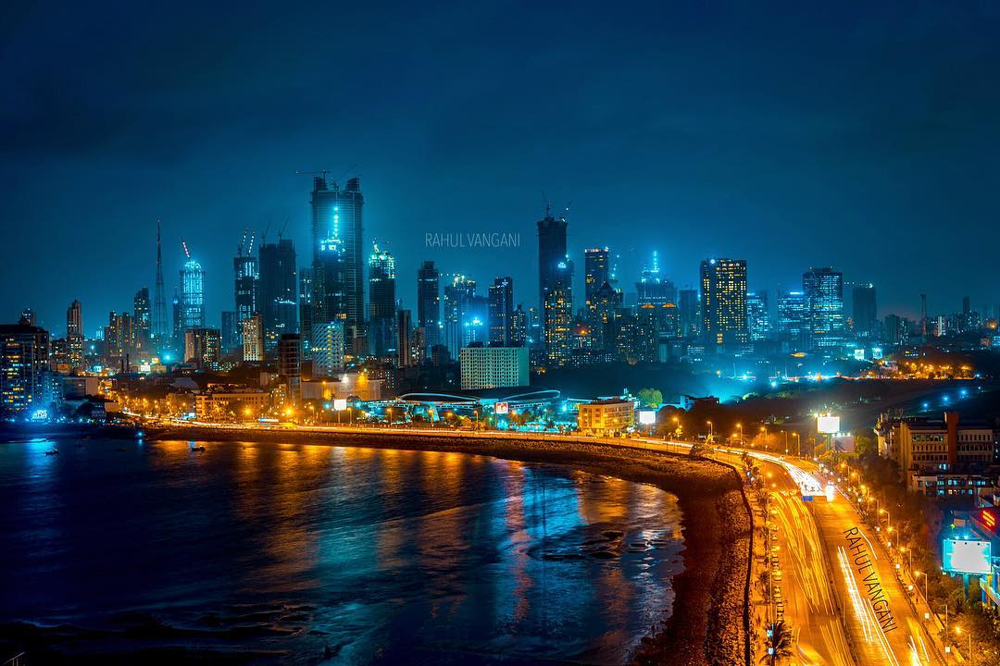
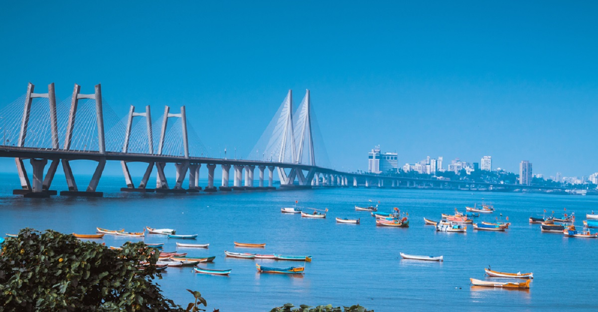
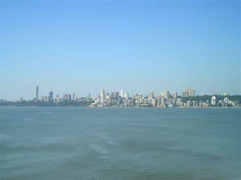
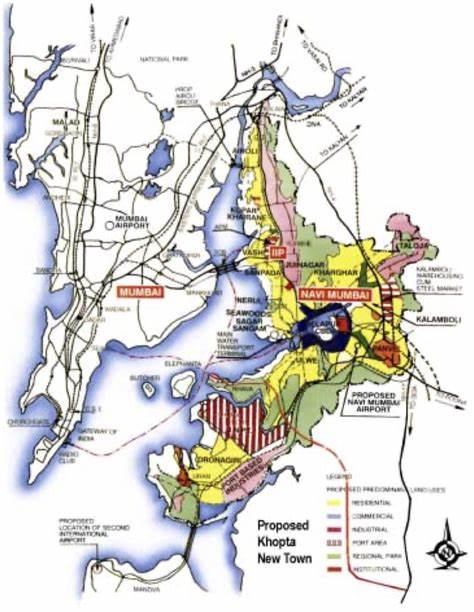
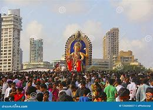

Mumbai : The City That Never Sleeps.
Mumbai, city, capital of Maharashtra state, southwestern India. It is the country’s financial and commercial center and its principal port on the Arabian Sea. Located on Maharashtra’s coast, Mumbai is India’s most-populous city, and it is one of the largest and most densely populated urban areas in the world.
It was built on a site of ancient settlement, and it took its name from the local goddess Mumba—a form of Parvati, the consort of Shiva, one of the principal deities of Hinduism—whose temple once stood in what is now the southeastern section of the city. It became known as Bombay during the British colonial period, the name possibly an Anglicized corruption of Mumbai or perhaps of Bom Baim (“Good Harbor”), supposedly a Portuguese name for the locale. The name Mumbai was restored officially in 1995, although Bombay remained in common usage.
- City site: The city of Mumbai occupies a peninsular site on Bombay Island, a landmass originally composed of seven islets lying off the Konkan coast of western India. Since the 17th century the islets have been joined through drainage and reclamation projects, as well as through the construction of causeways and breakwaters, to form Bombay Island. East of the island are the sheltered waters of Mumbai (Bombay) Harbor. Bombay Island consists of a low-lying plain, about one-fourth of which lies below sea level; the plain is flanked on the east and west by two parallel ridges of low hills. Colaba Point, the headland formed on the extreme south by the longer of those ridges, protects Mumbai Harbor from the open sea. Mumbai: Girgaum Chowpatty Mumbai: Girgaum ChowpattyPortion of southern Mumbai, Maharashtra, India, view from Girgaum Chowpatty along Back Bay, which opens into the Arabian Sea. The western ridge terminates at Malabar Hill, which, rising 180 feet (55 meters) above sea level, is one of the highest points in Mumbai. Between Colaba Point and Malabar Hill lies the shallow expanse of Back Bay. On a slightly raised strip of land between the head of Back Bay and the harbor is an area called the Fort, the site of the 17th-century British fortifications (little of which remains standing) within and around which the city grew; the area is now occupied chiefly by public and commercial offices. From Back Bay the land stretches northward to the central plain. The extreme northern segment of Mumbai is occupied by a large salt marsh. 
- Climate: The climate of Mumbai is warm and humid. There are four seasons. Cool weather prevails from December to February and hot weather from March to May. The rainy season, brought by monsoon winds from the southwest, lasts from June to September and is followed by the post-monsoon season, lasting through October and November, when the weather is again hot. Mean monthly temperatures vary from 91 °F (33 °C) in May to 67 °F (19 °C) in January. Annual rainfall is about 70 inches (1,800 mm), with an average of 24 inches (600 mm) occurring in July alone. 
- City layout: The older part of Mumbai is much built-up and devoid of vegetation, but the more affluent areas, such as Malabar Hill, contain some greenery; there are a number of open playgrounds and parks. In the course of urban expansion, some residential sections of Mumbai have fallen into a state of serious disrepair, while in other areas clusters of makeshift houses (often illegal “squatter” settlements) have arisen to accommodate the city’s expanding population. Moreover, an alarming amount of air and water pollution has been generated by Mumbai’s many factories, by the growing volume of vehicular traffic, and by nearby oil refineries. Mumbai: street scene Mumbai: street sceneStreet scene in southern Mumbai, Maharashtra, India. The financial district is located in the southern part of the city, in the Fort area. Farther south (around Colaba) and to the west along the Back Bay coast and on Malabar Hill are residential neighborhoods. To the north of the Fort is the principal business district, which gradually merges into a commercial-residential area. Most of the older factories are located in that part of the city. Still farther north are more residential areas, and beyond them are newer industrial zones as well as some squatter districts and other areas of overcrowded and poorly maintained housing. Mumbai, India: housing Mumbai, India: housingDensely packed housing in Mumbai, Maharashtra, India. Housing is largely privately owned, though there is some public housing built by the government through publicly funded corporations or by private cooperatives with public funds. Mumbai is extremely crowded, and housing is scarce for anyone who is not wealthy. (For that reason, commercial and industrial enterprises have found it increasingly difficult to attract mid-level professional, technical, or managerial staff.) In an attempt to stem the ongoing immigration of unskilled labour that has increased the city’s indigent and homeless population, city planners have encouraged enterprises to locate across Mumbai Harbor—notably in Navi (“New”) Mumbai—and have banned the development and expansion of industrial units inside the city; their efforts, however, have been largely unsuccessful. Mumbai: Chhatrapati Shivaji Terminus Mumbai: Chhatrapati Shivaji TerminusTraffic passing in front of Chhatrapati Shivaji (formerly Victoria) Terminus, Mumbai, Maharashtra, India. Mumbai’s architecture is a mixture of florid Gothic Revival styles—characteristic of the United States and Britain in the 18th and 19th centuries—and contemporary designs. Many residential and commercial buildings constructed in the Gothic Victorian style during the period of British rule still stand today—most notably the Chhatrapati Shivaji Terminus (formerly Victoria Terminus), the city’s main train station and headquarters of India’s Central Railway company. The older administrative and commercial buildings are intermingled with skyscrapers and multistoried concrete-block buildings. 
- Mumbai's People: Mumbai’s growth since the 1940s has been steady if not phenomenal. At the turn of the 20th century its population was some 850,000, by 1950 it had more than doubled, and over the next 50 years it increased nearly 10-fold to exceed 16 million. Population growth continued into the 21st century. The city’s birth rate is much lower than that of the country as a whole because of family-planning programs. The high overall growth rate is largely attributable to the influx of people in search of employment. Because of the limited physical expanse of the city, the growth in Mumbai’s population has been accompanied by an astounding increase in population density. By the early 21st century the city had reached an average of some 77,000 persons per square mile (29,500 per square km). Settlement is especially dense in much of the city’s older section; the wealthy areas near Back Bay are less heavily populated. The city is truly cosmopolitan, and representatives of almost every religion and region of the world can be found there. Almost half the population is Hindu. Significant religious minorities include Muslims, Christians, Buddhists, Jains, Sikhs, Zoroastrians, and Jews. Almost every Indian language and many foreign languages are spoken in Mumbai. Marathi, the state language, is the dominant Indian language, followed by Gujarati, Hindi, and Bengali (Bangla). Other languages include Pashto, Arabic, Chinese, English, and Urdu. 
- Economy: Mumbai is the economic hub and commercial and financial center of India. Its economic composition in some respects mirrors India’s unique mosaic of prosperity and technological achievement vis-à-vis impoverishment and underdevelopment. While Mumbai contains the Indian Atomic Energy Commission’s establishment, with its nuclear reactors and plutonium separators, many areas on the outskirts of the city continue to rely on traditional biogenic sources of fuel and energy (such as cow dung). The city is home to Reliance Industries Limited, a privately owned conglomerate that operates in petrochemical production and refining, textile, retail, telecommunications, and other industries. It became the first privately owned Indian company to enter the Fortune 500.
Mumbai continued to grow and prosper in the 21st century, in large part because of advances in the technology sector. By the second decade of the century the population of Greater Mumbai was approaching 20 million. The city’s infrastructure was improved considerably with the construction of new highways and bridges, expansion of port facilities, and the inauguration of new public-transit systems.